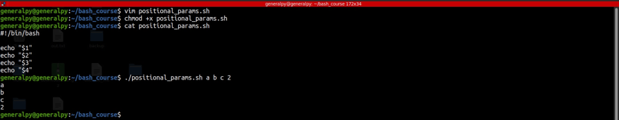

Bash assigns numbers to positional parameters following the command.
echo a b c dHere a b c and d are positional parameters.
Numbering is done starting from 1 to as many positional parameters we have.
To refer to the parameters we have to perform parameter expansion and if parametrs are more than 9 then we have to use curly bradces syntax.
Example program
